📖 使用教學
選一個你要看的部分：
🛠 製作一課教學影片
在你自己的電腦上操作。不需要 API 金鑰，也不用打任何指令。
開啟本機版
到 C:\AI\LSJ_ENGLISH-LEARN 資料夾，雙擊 start.bat。
會出現一個黑色視窗，瀏覽器也會自動打開網站。使用時不要關掉黑色視窗，關掉網站就停了。
在網頁上往下捲，影片和按鈕的下方就是 🛠 課程製作室：
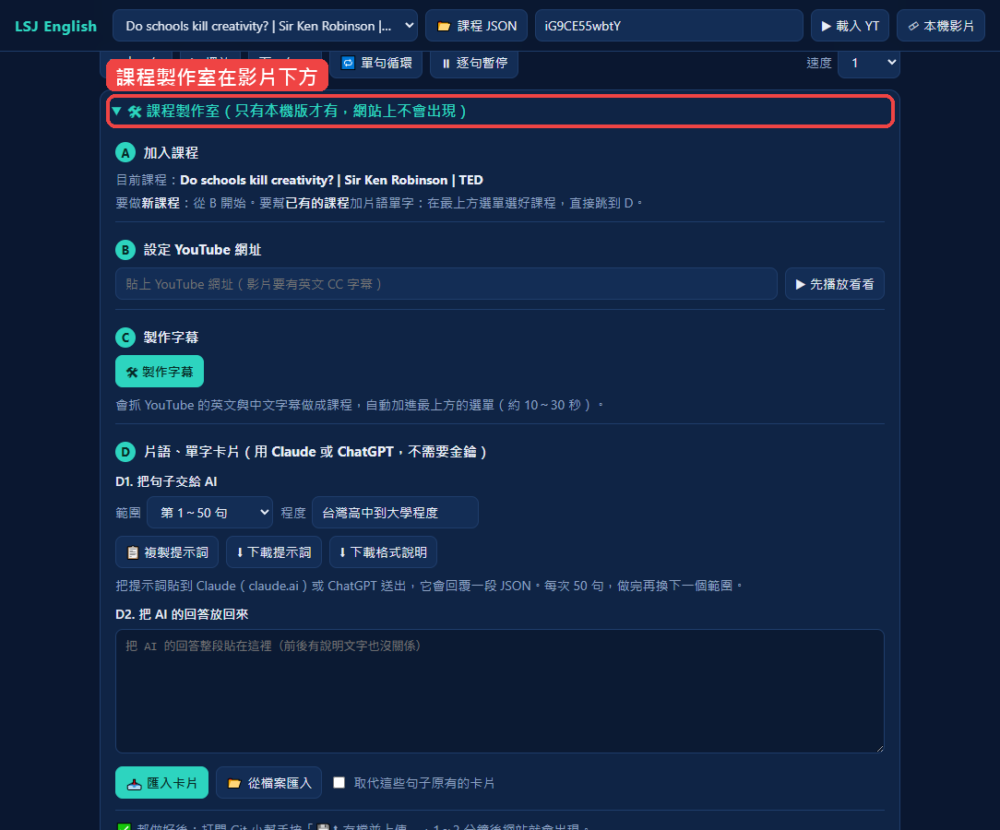
貼上 YouTube 網址（B）
在 YouTube 打開想教的影片，複製瀏覽器上方的網址，貼到 B 的框框裡。
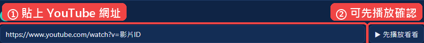
製作字幕（C）
按 🛠 製作字幕，等 10～30 秒。
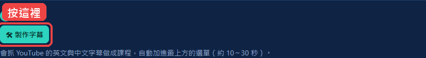
畫面下方出現這個訊息，新課程就會自動出現在最上方的選單，並開始播放：
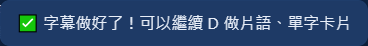
到這裡，影片已經有中英字幕了。想加上片語、單字卡片，繼續第 4 步；不想加，直接跳到第 8 步。
複製提示詞（D1）
在 範圍 選要處理的句子（一次 50 句），按 📋 複製提示詞。
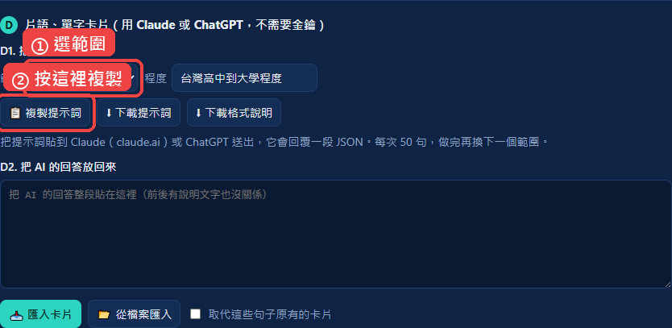
想讓卡片簡單一點或難一點，可以先改 程度，例如「國中」「多益 700」。
交給 AI（Claude 或 ChatGPT）
- 打開 claude.ai 或 chatgpt.com，開一個新對話。
- 在輸入框按 Ctrl + V 貼上，送出。
- 等 AI 回答完，按回答下方的 複製 按鈕，把整段回答複製起來。
AI 的回答大概長這樣（前後有說明文字也沒關係）：
好的，以下是卡片：
```json
{"cards":[{"i":1,"type":"chunk","match":"blown away","zhMatch":"震驚",
"title":"be blown away","meaning":"大受震撼、驚豔不已", ...}]}
```
匯入卡片（D2）
回到課程製作室，把 AI 的回答貼到 D2 的大框框，按 📥 匯入卡片。
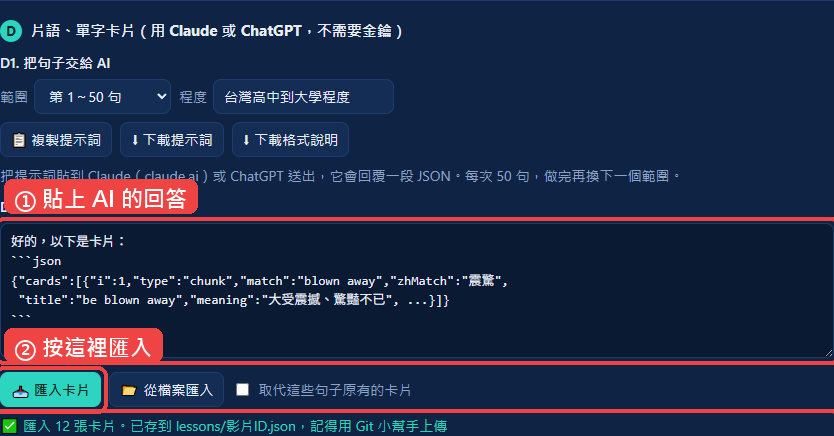
看到綠色的「✅ 匯入 … 張卡片」就成功了，卡片會自動存起來。
檢查成果
按播放看看：字幕有沒有跟著跑、片語有沒有高亮、下方有沒有出現卡片。
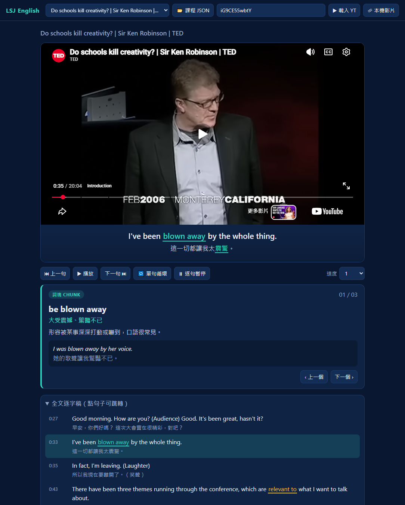
上傳到網站（Git 小幫手）
雙擊 C:\AI\lsj_git\GitTool.bat 打開 Git 小幫手，在說明欄寫「新增課程：影片名稱」，按 💾⬆ 存檔並上傳。
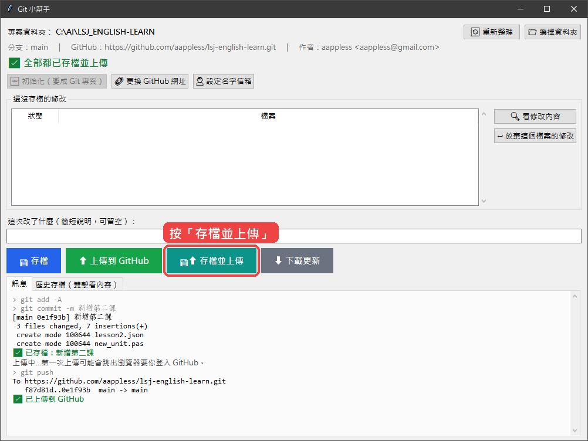
看到「✅ 已上傳到 GitHub」就完成了。Git 小幫手的詳細用法見 C:\AI\lsj_git\教學.html。
完成 🎉
沒看到新課程？按 Ctrl + F5 強制重新整理。
🎧 看課程、學英文
電腦、手機都可以用。
選課程
點最上方的 課程選單，選一課，影片就會載入。
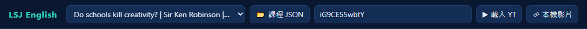
看影片、跟著字幕
播放時，影片下方會同步顯示英文和中文字幕。
有底線、有顏色的字是重點片語，點一下就會在下方顯示說明卡片。
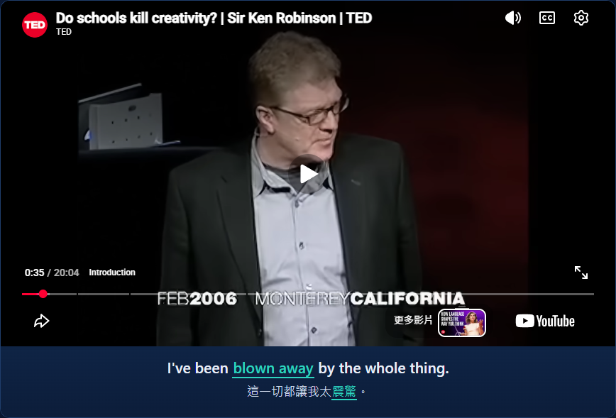
| 顏色 | 種類 |
|---|---|
| 青綠色 | 詞塊／慣用語（chunk） |
| 黃色 | 句型（pattern） |
| 紫色 | 文法（grammar） |
| 藍色 | 單字（word） |
讀片語卡片
卡片有中文意思、用法說明和另一個例句。右上角的 01 / 03 表示第幾張／共幾張。
按 ‹ 上一個／下一個 › 可以逐張複習，影片會跳到那張卡片的句子。
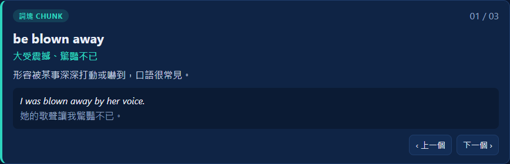
練聽力的按鈕
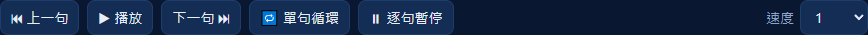
| 按鈕 | 功能 | 快捷鍵 |
|---|---|---|
| ⏮ 上一句 | 回到這句開頭；再按一次到上一句 | ← |
| ▶ 播放／⏸ 暫停 | 播放或暫停 | 空白鍵 |
| 下一句 ⏭ | 跳到下一句 | → |
| 🔁 單句循環 | 同一句一直重複，練聽力、跟讀最好用 | R |
| ⏸ 逐句暫停 | 每句播完自動停下，給你時間跟著念 | P |
| 速度 | 0.5～1.5 倍速，聽不清楚就放慢 |
全文逐字稿
最下方列出整部影片的每一句。點任何一句，影片就跳到那裡播放；正在播的句子會反白。
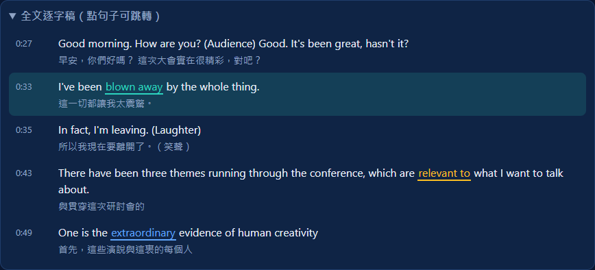
用手機看
用手機瀏覽器打開網址就能看，畫面會自動調整。
建議：按瀏覽器選單的「加到主畫面」，以後像 App 一樣一點就開。
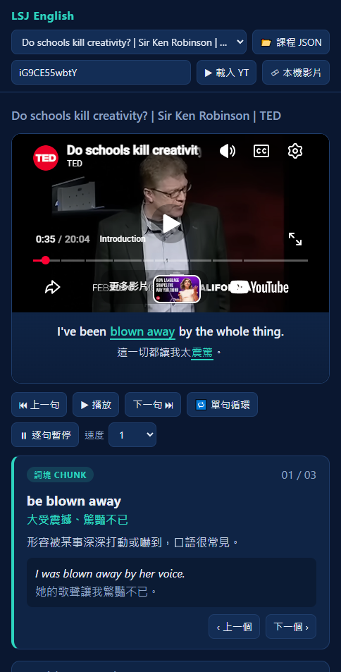